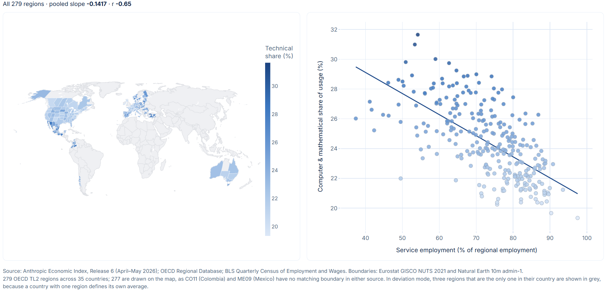

Most of what people ask Claude to do is professional work, and that is true almost everywhere. Across 279 regions in 35 countries, the professional and managerial occupations — management, business, computing, engineering, law, education, health — account for about three-quarters of usage. How service-heavy a region's economy is tells you essentially nothing about that share.
Narrow the question and the picture changes. The Economic Index sorts each conversation into one of the 22 major occupational groups of the US Standard Occupational Classification, and one of those groups is Computer and Mathematical — software development, systems analysis, data science, statistics, actuarial work. That is the group this piece is about, and I will call it technical usage from here on. It averages 24% of a region's usage and runs from about 19% to 32%.
The obvious guess is that technical usage concentrates where the offices are: financial districts, professional-services hubs, the regions where employment sits in offices rather than on factory floors. It is a reasonable guess. In the data it is backwards.
Pairing the Economic Index with the OECD's regional statistics, I compared 279 regions across 35 countries — states, provinces, Länder and their equivalents, the first administrative tier below the national government. Within countries, regions with more service employment show a lower technical share of usage. Moving from the 10th to the 90th percentile of regional service employment — from 57% of employment to 86% — is associated with a drop of about 1.7 percentage points in the technical share, roughly 7% of its average and about 1.3 standard deviations of the variation that exists inside a typical country.
That is not a rounding error, and it is not driven by any one country.
Three ways to measure AI, and a gap between them
There are broadly three ways economists have measured artificial intelligence in the economy, and they answer different questions.
The first is exposure: what AI could plausibly do. Felten, Raj and Seamans built the standard measure here, linking catalogued applications of AI to the workplace abilities that O*NET uses to describe occupations, then aggregating to occupations, industries and geographies. Their measure is deliberately agnostic about consequences — it says nothing about whether AI replaces a worker or makes them faster. It measures potential contact, not outcome.
The second is adoption: what workers and firms say they do. Bick, Blandin, Deming, Fuchs-Schündeln and Jessen fielded harmonized surveys across the US and Europe and found a substantial adoption gap, with US workers reporting higher use than their European counterparts. The more interesting result is what explains it. Differences in who works where — occupation, industry, firm size, demographics — account for a good share of the gap, and once you add whether a worker's employer actively encourages AI use, very little of it is left unexplained. Adoption looks less like a story about national character and more like a story about workplaces.
The third is usage: what people actually do, observed rather than reported. This is what the Anthropic Economic Index provides, by classifying the content of conversations with Claude. Scott Davis at the Dallas Fed recently connected two of these traditions, showing that the link between a sector's AI exposure and its recent productivity growth is stronger in countries where AI usage is more intense.
It is a genuinely useful result, carefully framed as correlational, and it is where this piece starts. A country-level comparison has about twenty observations, and countries differ in a thousand ways at once — language, regulation, income, industrial structure, broadband. The pattern is visible at that scale; what sits behind it is not separable there.
On Davis's own usage index, Germany sits at 1.79 and France at 2.66 — a gap of nearly 50% between two neighbouring economies of similar size and wealth. "Country" turns out to be a coarse unit even for the thing being measured. Whatever is driving AI usage, it is not operating at the level of continents.
That is the gap this piece walks into. Release 6 of the Economic Index reports usage for 652 first-level administrative regions rather than just countries. That is enough to stop comparing countries to each other and start comparing regions inside the same country — provided you can find comparable economic statistics for each region, which is where the OECD comes in and where most of the sample goes. This piece covers 35 countries rather than the 128 the Economic Index reaches because comparing regions means knowing each region's employment structure, and the OECD Regional Database is the only harmonized source for that. The full accounting from 652 regions down to 279 is in Appendix A.
Why comparing regions inside countries matters
Comparing Estonia's AI usage to Poland's tells you something, but you can't say what. The two differ in income, language, regulation, industry mix and digital infrastructure, and any of those could drive the result.
Comparing Bavaria to Saxony-Anhalt is a different exercise. Both sit under the same national government, the same language, the same regulatory regime, the same broadly similar institutions. What differs is regional: the local economy, the local labour force, the local mix of employers.
A word on what I mean by service employment, because it is broader than it sounds. It is the standard national-accounts definition: everything that isn't agriculture, mining, manufacturing, utilities or construction. Retail and wholesale trade, transport, hotels and restaurants, information and communication, finance, real estate, professional and administrative services, public administration, education, health, arts and recreation. A supermarket cashier, a bus driver, a nurse and an investment banker are all service employment. It is not a synonym for office work or white-collar work — and it is not the same thing as the white-collar share of usage from the opening, which describes what people ask Claude to do rather than where they work. Regions in the sample run from about 37% service employment to 97.5%.
That breadth is worth worrying about: a region can be service-heavy because of its hotels or because of its law firms, and those are not the same economy. So I tested a narrower measure covering only information, finance and professional services. It gives the same sign, which means the finding is not manufactured by lumping restaurant work in with professional services. It also cannot be separated from how much Claude usage a region generates, which is why the broad measure is the one I report. Appendix A has both.
Statistically this is a country fixed effect, and it does the heavy lifting throughout. Every comparison below is between regions of the same country. National differences are subtracted out before anything is estimated, so nothing here can be explained by a country being rich, or English-speaking, or lightly regulated.

The interactive version of this figure needs a wider screen — open it in a new tab.
How to read this. The map and the scatter show the same 279 regions, and the toggle above them changes what "high" means in both panels at once.
In Levels, the map shows where the technical share of usage is highest, and the scatter plots that share against service employment. The slope is steeply downward — but that is not yet evidence of anything. The darkest regions cluster in a handful of countries, and the scatter shows the data clumping into country-shaped clouds. This is the view that puts Estonia next to Mexico next to Germany, and those places differ in income, language, regulation and industrial structure all at once.
Switch to Deviation from country average and every region is re-expressed as a difference from its own country's mean. The clouds collapse onto a common origin. The map stops showing which regions are technical and starts showing which are technical for their country. The relationship survives at roughly half its raw size.
That collapse is the country fixed effect, performed rather than asserted. Everything that follows in this piece is measured in the second view, not the first. Click any region to find it in both panels.
The finding
Across all 279 regions pooled together, service employment and technical AI use are negatively correlated at −0.65. That much could be a composition effect: rich service-heavy countries might simply differ from poorer industrial ones.
It survives the country fixed effect. Within countries, a one percentage point increase in a region's service employment share is associated with a 0.058 percentage point decrease in the technical share of usage. Adding controls for regional GDP per capita and the share of the population with tertiary education attenuates the estimate but does not break it.
How to read this. Both axes are differences from a region's own country average. A region sitting at zero on the horizontal axis has exactly the service employment share that is typical of its country — not of the world.
Pick a country from the dropdown and its regions stay in colour while the rest fade to grey. That re-centring is what a fixed effect does: inside Germany the comparison becomes Bavaria against Saxony-Anhalt, and Germany's national position drops out of the arithmetic entirely. The dotted line is that country's own slope, drawn for the eighteen countries with at least five regions.
Sixteen of those eighteen slope the same way as the pooled estimate. The two that don't — Chile and Poland — are weak enough to be indistinguishable from noise at six and eleven regions. I come back to that below.
The United States is the cleanest test available. It contributes 51 regions measured on a single consistent statistical system, so nothing hinges on harmonizing definitions across borders. Within the US, the relationship is more than twice as strong as the international average.
One further piece of the pattern is worth stating, because it narrows what can be going on. When the technical share of usage falls, no particular occupation absorbs it. Four occupational groups — office and administrative support, sales, education, and arts and media — are reported in every single region, so nothing is missing from that comparison. Their share of non-technical usage is essentially constant from region to region. When the technical slice shrinks, everything else expands in proportion. Nobody picks up the slack.
The same holds one level up. Recall that professional and managerial work is about three-quarters of usage everywhere and shows no relationship to service employment. Technical work sits inside that block, and it does fall — so in principle the rest of the block should be rising to compensate. It shows no detectable rise: +0.03 with a t-statistic of 0.99, and nearer zero still once regional usage volume is controlled for. Management, business, legal, health and education usage are not visibly absorbing what computing gives up.
How hard I tried to break it
A surprising result deserves more scepticism than a confirming one, so this is where I spent most of the time.
No single country drives it. I re-estimated the model 35 times, each time dropping one country entirely. The coefficient ranged from −0.052 to −0.067 across all 35 refits, and the median landed exactly on the full-sample estimate. Not one refit came close to zero.
It isn't a US result in disguise. The US is 18% of the sample, which is a lot of weight for one country. Dropping it entirely leaves the estimate at 90% of its original size and still comfortably significant.
It isn't one strange region. Washington DC is an extreme outlier, with 97.5% of employment in services. Removing it changes nothing. More tellingly, when I identified the five regions with the most statistical leverage over the coefficient and dropped them, the relationship got stronger. The influential observations were working against the result, not creating it.
The standard errors aren't flattering me. With 35 countries, one contributing a fifth of the observations, conventional clustered standard errors are optimistic. I re-ran the key test with a bootstrap that resamples at the country level rather than trusting an asymptotic approximation. The honest critical values are wider than the textbook ones, and the result clears them anyway.
A completely separate measure of technical usage agrees. The Economic Index classifies each conversation two ways: by the occupation the task belongs to, and by the artifact it produced — the concrete thing the user ended up with. Everything above uses the occupational classification. So I built a second measure from the artifact side, adding up the shares of usage that produce code fixes, scripts, database queries and configuration files.
Nothing about how it is built is shared with the first. Different classification scheme, different question, and — this is the part that matters — no suppression at all. The artifact data is reported for all 652 regions with every category present, so none of the disclosure problems described in the appendices apply to it. No coverage variable, no renormalization, no volume control needed.
It gives the same answer. Within countries, a one point rise in service employment is associated with a 0.056 point fall in the artifact measure, against 0.058 for the occupational one. Measured in standard deviations, the artifact version is slightly stronger. The two correlate at 0.65 within country — closely enough to be tracking the same thing, loosely enough that their agreement isn't circular.
One caveat worth stating: these are two classifications of the same conversations, not two independent datasets. The test rules out quirks of the occupational taxonomy and of the disclosure structure, which is what was in doubt. It cannot rule out something common to the underlying sample.
And I rebuilt the whole thing in another language. I replicated the entire pipeline in Stata — the data extraction, the merge, the estimation — working only from my own written method description rather than from the original Python code. That constraint is the point: porting code line by line reproduces whatever misunderstanding was baked into it, while rebuilding from the description tests whether the description is actually right. Every intermediate dataset and every published estimate came back to floating-point tolerance. It surfaced three reporting issues, all documented in the appendices, and no substantive error.
The relationship also holds at a finer geographic grain, and in a specification that drops the education control. Details are in the appendix.
The explanation I couldn't confirm
I had a tidy story for why the sign comes out this way, and I want to be clear that I could not confirm it.
The story is breadth. In an industrial region, the small population of Claude users skews heavily toward engineers and IT staff, so the technical slice looks large. As service employment rises, usage spreads across sales, administration, healthcare, education and management, and the technical slice shrinks by dilution rather than by any decline in technical work.
That is a testable claim, not an interpretation, so I tested it — three different ways, and all three failed. The obstacle is a privacy feature of the data: the Economic Index withholds occupation categories in a region when the underlying counts are too small, so a region with more usage overall has more categories clearing that threshold and appears more occupationally diverse for reasons that have nothing to do with diffusion. Control for regional usage volume and every measure of breadth I tried collapses, while the main finding stands at close to full strength.
Along the way one of my own robustness checks turned out to be worthless, in a way I think is more instructive than the checks that passed. I've written both up in Appendix B.
So breadth is not supported. That is a failure of identification rather than proof that breadth is false — the data cannot settle it either way, and I'd rather say so than dress a null up as a finding.
What this can and can't tell you
Three limits worth being blunt about.
This measures the mix, not the amount. Below the country level, the Economic Index reports what people use Claude for, not how much they use it per person — usage intensity exists only for the United States. So I can say the technical share of usage is lower in service-heavy regions. I cannot say whether less coding is happening, or the same amount of coding surrounded by more of everything else. Those are different worlds and this data cannot separate them.
This is about regions, not about the people using Claude. Service employment describes a region's workforce. The usage data describes whoever in that region is talking to Claude, and those are not the same population — Claude users are not a random sample of local workers, and nothing here links an individual's occupation to their own usage. The finding is that regions with a particular employment structure show a particular usage mix. It is not that service workers themselves use AI less technically. That distinction is easy to lose and it changes what the result means.
Nothing here is causal. These are correlations across regions at a point in time, with country fixed effects and a handful of controls. Regions differ in ways I haven't measured, and I make no claim that changing a region's industrial structure would change how its residents use AI.
What's left
What survives all of that is a fact and a question.
The fact. Within countries, the regions where you would most expect AI to be doing technical work are the regions where it does proportionally less of it. That holds across 35 countries, across the 51 US states measured on a single statistical system, across 35 refits that each drop a country entirely, and across a second measure of technical usage built from a different classification scheme with no disclosure suppression in it at all.
Why it matters. The natural way to guess where AI does technical work is to read it off the local industry mix: more offices, more technical use. Within countries the sign is the opposite. Anyone projecting regional AI effects from employment structure is working from a mapping that this data reverses.
The question. Why it runs that way, I can't tell you. Dilution is the natural candidate — technical usage looking large in industrial regions because few people there use Claude and those who do skew technical — and I tested it three ways without being able to confirm any of them. What the data can do is rule out a good deal about what the pattern isn't. What it can't do yet is say what it is.
I would rather publish a robust fact with an open question attached than a tidy story the evidence doesn't carry.
If you want to check my work
-
Appendix A — How the analysis was built
Data, matching, specification, and why the volume control is left out of the preferred estimate. -
Appendix B — Three attempts at breadth, and a robustness check
that wasn't
Why the tidy explanation could not be identified, and the argument of mine that turned out to be circular. -
Appendix C — One error, four disguises
The missing-value mistake that showed up four times in two languages, and what caught it. -
Full data dictionary
Every variable in the analysis, defined twice — once technically, once for a reader with no economics background.